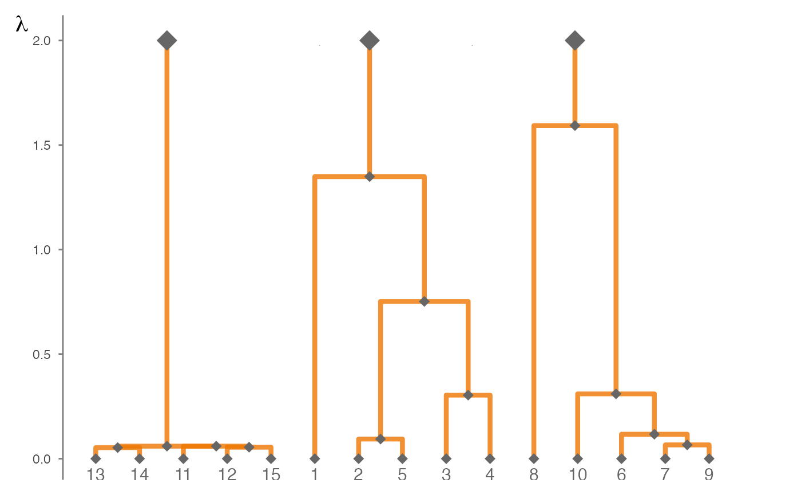

Clusterpath as hierarchical clustering
hierarchy-graph.Rdggplot2 and ggraph function to plotting the results from the clusterpath algorithm.
Arguments
- list_results
A list of results optimization from
HR_Clusterpath().- id_names
A liste of strings for the nodes label. If
NULL(default), the labels are integer from \(1\) to \(d\), the number of variables.- replicates
A list of results optimization replicates from
HR_Clusterpath().
Value
For gg_cluster(), the dendrogram obtained from the optimization results from
HR_Clusterpath() for each lambda.
For average_hierarchy(), the average dendrogram obtained from the several optimization results
from HR_Clusterpath() for each lambda.
Details
During its development in \([1]\), the clusterpath algorithm was built from a convex relaxation of hierarchical clustering that allows us to produce this kind of graphs from the results of the algorithm with a enough thin and large grid for the penalty \(\lambda\).
References
\([1]\) Hocking, T. D., Joulin, A., Bach, F., and Vert, J.-P. (2011). Clusterpath: An Algorithm for Clustering using Convex Fusion Penalties. In Proceedings of the 28th International Conference on Machine Learning, Bellevue, Washington, USA,. Omnipress.
Examples
# Construction of clusters and R matrix
R <- matrix(c(1, -3, 0,
-3, 2, -2,
0, -2, 1), nc = 3)
clusters <- list(1:5, 6:10, 11:15)
# Construction of induced theta and corresponding variogram gamma
Theta <- build_theta(R, clusters)
Gamma <- graphicalExtremes::Theta2Gamma(Theta)
gr3_bal_sim_param_cluster <-
list(
R = R,
clusters = clusters,
Theta = Theta,
Gamma = Gamma,
chi = 1,
n = 1e3,
d = 15
)
set.seed(804)
data <- graphicalExtremes::rmpareto(n = gr3_bal_sim_param_cluster$n,
model = "HR",
par = gr3_bal_sim_param_cluster$Gamma)
lambda <- seq(0, 3, 1e-3)
res <- HR_Clusterpath(data = data,
zeta = gr3_bal_sim_param_cluster$chi,
lambda = lambda,
eps_f = 1e-1)
gg_cluster(res)
